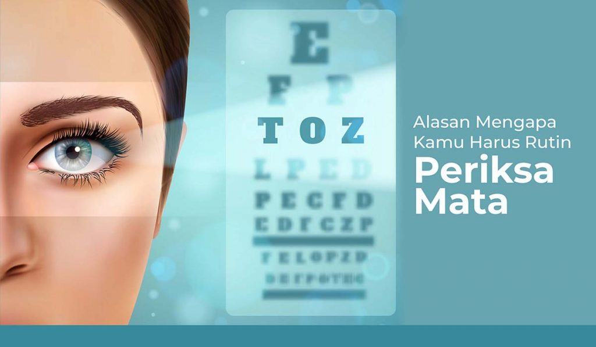

Kenapa Olahraga Mata itu Penting?
Buat kamu yang sering menghabiskan banyak waktu di depan komputer atau gadget, sangat penting, loh, untuk memperhatikan dan menjaga kesehatan

Alasan Mengapa Kamu Perlu Rutin Periksa Mata
Salah satu pemeriksaan kesehatan yang penting dilakukan secara berkala adalah periksa mata. Semakin tua usia seseorang, kesehatan mata dan fungsi penglihatan rentan
Read More
Read More